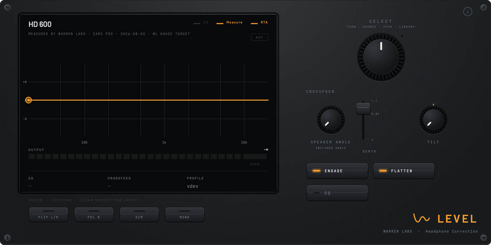
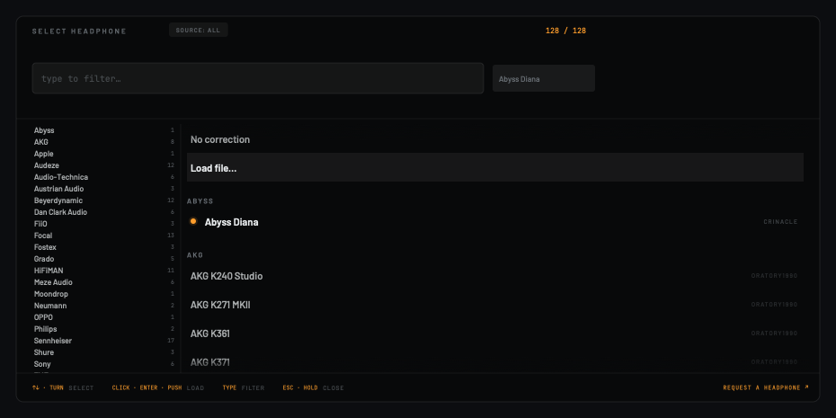
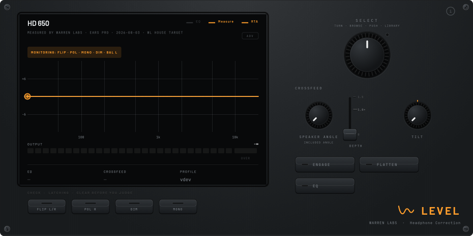
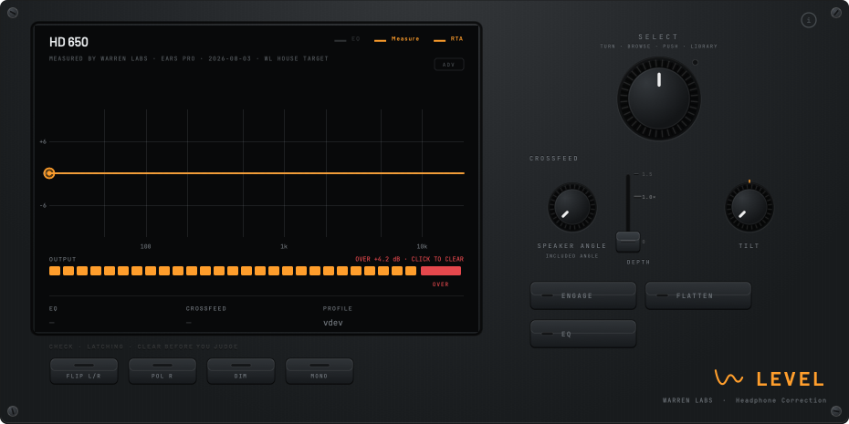

Level
Hear your headphones honestly.




Flattens a headphone's measured response by inverting its curve, then adds Bauer-style crossfeed so a mix translates the way speakers would. Every curve says who measured it — six of them are ours, taken on a rig we own. The signal comes out measurably corrected, honest before anything else.
- Six headphones measured on our own rig — badged, not borrowed
- Bauer crossfeed with interaural delay, loudness-neutral within 0.05 dB
- Output metering with a latched clip indicator, and Safe Gain
- Monitoring checks: flip, polarity, dim, mono
- Voicing + RTA layer · VST3 / AU / Standalone
This beta isn’t notarized by Apple yet, so macOS shows a one-time “unidentified developer” warning the first time you open the installer. It’s safe to allow. Here’s how:
- macOS 15 (Sequoia) and later: double-click the downloaded
.pkg. When macOS blocks it, open System Settings → Privacy & Security, scroll down, and click Open Anyway. - macOS 14 and earlier: right-click the
.pkg→ Open → Open.
Installs to /Library/Audio/Plug-Ins/Components/Level.component (AU), …/VST3/Level.vst3 (VST3), and /Applications/Level.app (Standalone). Relaunch your DAW afterward so it rescans. A notarized build with no warning ships once the Warren Labs developer account is approved.
The library grows by request. Tell me the make + model and I’ll add a measured correction curve.
Request a headphone ↗